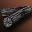
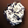
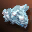
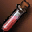
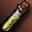

Крафт Sealed Shield of Nightmare в Lineage 2 Interlude
Рецепт и материалы
на 1 попыткуSealed Shield of Nightmare — прочее A-грейда в Lineage 2 Interlude. Крафтится по рецепту Recipe: Sealed Shield of Nightmare(60%) с шансом 60%. Уровень Create Item — 8, требуется 201 MP. Рецепт расходуется при каждой попытке — как и материалы.
При провале теряются все материалы и рецепт (если он расходуемый). Каждая попытка независима: предыдущие успехи или провалы не меняют шанс следующей.
Сколько попыток и ресурсов
математика шансаБазовые ресурсы с промежуточными крафтами
| Материал | На 1 попытку | На 1 успех | На 95% |
|---|---|---|---|
| 630 | 1 050 | 2 520 | |
| 287 | 478,33 | 1 148 | |
| 224 | 373,33 | 896 | |
| 168 | 280 | 672 | |
| 127 | 211,67 | 508 | |
 Charcoal |
99 | 165 | 396 |
| 35 | 58,33 | 140 | |
Stone of Purity |
21 | 35 | 84 |
 Mithril Ore |
21 | 35 | 84 |
Sealed Shield of Nightmare Fragment |
14 | 23,33 | 56 |
Crystal: A-Grade |
12 | 20 | 48 |
 Oriharukon Ore |
11 | 18,33 | 44 |
| 7 | 11,67 | 28 | |
 Mold Glue |
4 | 6,67 | 16 |
 Mold Lubricant |
4 | 6,67 | 16 |
Gemstone A |
3 | 5 | 12 |
Recipe: Sealed Shield of Nightmare(60%) |
1 | 1,67 | 4 |
Колонка «на 95%» — сколько материалов нужно, чтобы с вероятностью 95% получить хотя бы один предмет. Расчёт предполагает независимые попытки и фиксированный шанс 60%.
Материалы на разное число попыток
без гарантии| Попыток | Материалов | Ожидаемо успехов | Шанс хотя бы одного |
|---|---|---|---|
| 1 | 73 | 0,6 | 60,00% |
| 5 | 365 | 3 | 98,98% |
| 10 | 730 | 6 | 99,99% |
| 25 | 1 825 | 15 | 100% |
| 100 | 7 300 | 60 | 100% |
Шанс не накапливается: даже после 10 провалов следующая попытка всё равно имеет 60%. Таблица показывает только вероятность получить хотя бы один предмет за серию независимых попыток.
Как крафтить Sealed Shield of Nightmare
Create Item- Соберите 9 позиций материалов: 73 предмета на одну попытку.
- Изучите рецепт Recipe: Sealed Shield of Nightmare(60%). Для крафта нужен уровень Create Item 8 и 201 MP.
- Используйте умение Create Item. Шанс успеха — 60%, каждая попытка независима.
- При успехе получите 1 предмет Sealed Shield of Nightmare. При провале материалы и расходуемый рецепт пропадут.
В симуляторе можно проверить серию попыток: одиночный крафт, ×10, ×100 или режим «До успеха». Статистика сохраняется в браузере и показывает фактический процент успеха.
Другие рецепты
Прочее · AЧастые вопросы
FAQКакой шанс крафта Sealed Shield of Nightmare?
Шанс успеха — 60%. Это независимая попытка: каждый крафт не зависит от предыдущих.
Сколько материалов нужно на Sealed Shield of Nightmare?
На одну попытку нужно 9 позиций и 73 предмета суммарно. С промежуточными крафтами раскрывается 17 видов базовых ресурсов.
Сколько попыток в среднем нужно для крафта Sealed Shield of Nightmare?
При шансе 60% в среднем нужно 1,67 попытки, медиана — 1, для 95% вероятности — 4 попытки.
Расходуется ли рецепт Sealed Shield of Nightmare?
Да, рецепт расходуется при каждой попытке. При провале материалы и рецепт пропадают.
Можно ли гарантированно скрафтить Sealed Shield of Nightmare?
Нет. Шанс 60% фиксирован и не растёт от количества попыток. Для 95% вероятности нужно 4 попытки, но абсолютной гарантии не существует.